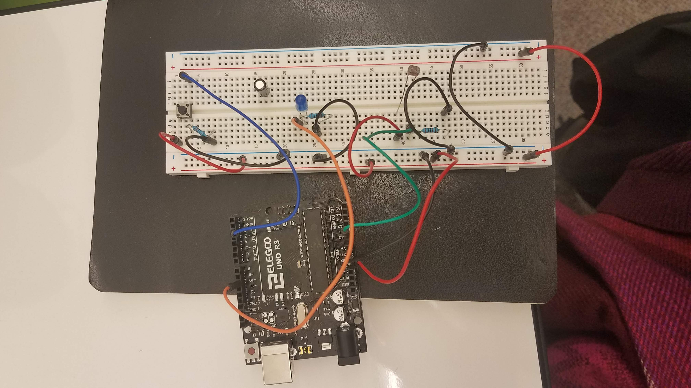
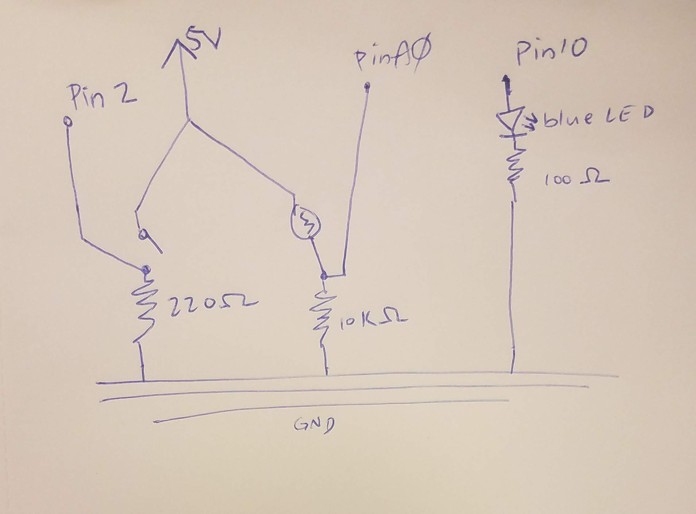

Lily's Assignment 6!
Here is all the documentation for assignment 6! (It is mostly copied from Assignment 5)
For this assignment, I used two sensors, a photoresistor, a button, and a blue LED. When these received input, I was able to use Serial to write to a webpage. The input data from the button and the photoresistor were printed in Serial, and then P5 Serial Control was able to read from the serial port. I imported that data to a Javasript file, where I used the various input values to draw using the draw() function.
I was able to write from the website to serial, and then this data was read to the arduino and used to determine whether the LED was on or off.
I also used a button on my webpage, which was able to tell when someone had clicked it, and then send information to Serial. The input I sent to Serial was either a 1 or Kay and Lia helped me with the code for reading and parsing the sensor values in javascript.
Operation of Circuit
This gif shows the operation of my circuit:

You can see that when I had the photoresistor covered with a towel, the while circle stayed on the screen constantly. Then, when I shined a light on it the white circle went away.
Then, if I clicked the button on the screen, it turned the blue LED on on the breadboard.
Circuit

This image shows my circuit. I used pin A0 with the photoresistor so I could use AnalogRead().
Schematic

The function of my system:
I used my calculations from assignment 2 and assignment 3 for the correct resistors to use with the button and photoresistor, respectively.
To find the right resistor to use with the button, I used the equation:
I used 0.035A because the max current for a button is 40mA; I used 35mA to be on the conservative side. The button doesn’t have a voltage drop, so the 5V supplied by the arduino remain constant in the equation.
143ohm ~= R
So, I used the 220 ohm resistor because that was the closest to 143 ohms
To find the resistor value to use with the photoresistor, I had to do some calculations using the min and max resistance of the photoresistor, depending on the amount of light it is exposed to. I used the multimeter to get the max and min values, measuring when the lights were on, and when the room was dark. These are the values I read:
Rmin: 185 ohms
Rmax: 100k ohms
Then, I looked for the resistor that would allow analogRead() to read the widest range of values possible at the voltage divider. If the photoresistor were capturing the whole range, the readings would go from 0-1023 (a full 5 volt range); mine only went from about 30 to 900, that's why I constrained my range to those values in my void loop.
Next, I calculated the Vout values for both the low and high resistance values; then, I subtracted Vout_low from Vout_high to get the voltage range; I checked for 220 ohms, and the range was pretty small, so I went up to 100k ohms, and the range was also small. Then, I went down to 2k ohms and the range was 4.47V. I did the calculation for 10k ohms, and the range was slightly smaller than the 2k resistor, at 4.45V.
Even though the 10k resistor had a range that was a tiny bit smaller, I chose that resistor because I figured using a higher resitor would be a safer bet, and the tiny difference in voltage range between 10k and 2k would not make a visible difference.

For the blue LED's resistor, I used my calculations from assignment 1:
For the blue LED I used the 100 ohm resistor by calculating the following:
For the blue LED I used the 100 ohm resistor by calculating the following:5V-3.3V = 20mA * __ohms
1.6V/0.02A = 80 ohms
80 ohms was closest to the 100 ohm resistor, so I chose that one
Here is my code for this assignment.
This is the arduino code.
For the input data from the button, I read either 1 (HIGH) or 0 (LOW). For the photoresistor, the values read ranged from 0-1023.
// makes a constant for the number of my pin connected to the button const int buttonPin = 2; // makes a constant for the number of my pin connected to the photoresistor const int photoPin = A0; // makes a constant for the number of my pin connected to the blue LED const int ledPin = 10; // initializes a value for the button reading int button = 0; // initializes a value for the photoresistor reading int photo = 0; void setup() { Serial.begin(9600); // so I can see values in serial monitor Serial.setTimeout(10); // set the timeout for parseInt pinMode(ledPin, OUTPUT); // configures the pin connected to the LED as output pinMode(buttonPin, INPUT); // configures pin connected to the button as input pinMode(photoPin, INPUT); // configures pin connected to the photoresistor as input } void loop() { button = digitalRead(buttonPin); // sets variable button to the pin of the button photo = analogRead(photoPin); // sets variable photo to pin of photoresistor int constPhoto = constrain(photo, 30, 900); // constrains input value to range most likely to be read int mapPhoto = map(constPhoto,30, 900, 0, 200); // maps range to smaller range Serial.print("["); // print [ in serial monitor Serial.print(button); // prints the button reading value in the serial monitor Serial.print(","); // prints a comma between button and photo values // this is important for reading the data in javascript Serial.print(mapPhoto); // prints photoresistor value and a newline Serial.println("]"); // print ] in serial monitor delay(50); // delay of 50 milliseconds if (Serial.available() > 0) { // if there's serial data and it is value greater than 0 int inByte = Serial.read(); // read it Serial.write(inByte); // send it back out as raw binary data analogWrite(10, 255); // turn on the LED at max brightness } else { // if the is not serial data greater than 0 analogWrite(10, 0); // do not turn on the LED } }
This is the javascript code. I used example2 as my basis for this assignment, and altered it as needed. Kay helped me make the button function and html visual element.var serial; // variable to hold an instance of the serialport library var portName = '/dev/tty.usbmodem14101' // name of my port var dataarray = []; // some data coming in over serial! var button; // variable to hold the state of the button var photo; // variable to hold the thermistor sensor value let position = 100; // initializes the starting position of the line to be at 100 var newarray; // container for the JSON parsed serial var buttonState = 0; // variabble for the state of the button on the website // var serial; // variable to hold an instance of the serialport library // var portName = '/dev/tty.usbmodem14101' //rename to the name of your port to the port on my mac // //var dataarray = []; //some data coming in over serial! // // var xPos = 0; // var button = 0; // makes a variable to store the button read value // var photo = 0; // makes a variable to sotre the photoresister read value function setup() { serial = new p5.SerialPort(); // make a new instance of the serialport library serial.on('list', printList); // set a callback function for the serialport list event serial.on('connected', serverConnected); // callback for connecting to the server serial.on('open', portOpen); // callback for the port opening serial.on('data', serialEvent); // callback for when new data arrives serial.on('error', serialError); // callback for errors serial.on('close', portClose); // callback for the port closing serial.list(); // list the serial ports serial.open(portName); // open a serial port createCanvas(1200, 800); // makes a canvas on the webpage that is 1200 by 800 pixels background(0x08, 0x16, 0x40); // changes the color of the backgrouns // adds an event listener to the button displayed on the webpage document.getElementById("led").addEventListener("click", led); } // get the list of ports: function printList(portList) { // portList is an array of serial port names for (var i = 0; i < portList.length; i++) { // Display the list the console: print(i + " " + portList[i]); } } // method used for debugging purposes function serverConnected() { // prints out success message print('connected to server.'); } // method used for debugging purposes function portOpen() { // prints out success message print('the serial port opened.') } // method used for debugging purposes function serialError(err) { // prints out error message and the code print('Something went wrong with the serial port. ' + err); } // method used for debugging purposes function portClose() { // prints out exiting message print('The serial port closed.'); } // this method reads serial and gets the values read by the button and photoresistor // then turns them into variables I can use function serialEvent() { if (serial.available()) { // checks if there is serial data to read var datastring = serial.readLine(); // reads data from the serial var newarray; try { // if no errors newarray = JSON.parse(datastring); // (the button press is the first value written to Serial before a space) // saves the first value in the data string as photo // (the photoresistor reading is the first value written to Serial before a space) } catch(err) { // checks for errors console.log(err); // prints the error statement in console to make debugging easier } if (typeof(newarray) == 'object') { // if the json data exists dataarray = newarray; // assign the array to the new array because the data is valid button = dataarray[0]; // save first value in the arra (whether button was pressed) as variable 'button' photo = dataarray[1]; // save second value in the array (photoresistor reading) as variable 'photo' } } } // function for sending data about whether the digital button has been pressed to serial function led() { // if the buttonState variable is outside the normal range if (buttonState > 1) { // set it to 0 buttonState = 0 } // if the buttonState is 1 if (buttonState == 1) { // write 1 to serial so it can be read by the arduino serial.write("1"); // if the buttonState is 0 } else if (buttonState == 0) { // write 0 to serial so it can be read by arduino serial.write("0"); } // increments buttonSTate so it will toggle appearance, and LED turns off/on buttonState++; } // function loops and makes the designs I made on the webpage function draw() { // function of draws on the webpage if (button == 0) { // checks if the button was pressed // the following variables make it so I can more easily update the colors of the grid on my webpage // these three numbers make dark blue x = 0; // x is R value for every other rectangle y = 0; // y is G value for every other rectangle z = 100; // z is B value for every other rectangle // these three numbers make light blue a = 0; // a is R value for every other rectangle b = 100; // b is G value for every other rectangle c = 200; // c is B value for every other rectangle // loop that makes first column of rectangles of alternating colors for (var i = 0; i< 5; i++){ if (i%2 ==0){ // checks if the number is odd or even (so I can make every other rectangle a diffrent color) fill(x, y, z); // fills rectangle rect(0, i*160, 240, 160); // makes rectangle, moving the y-coordinate down 160 pixels each loop } else { // if number is odd fill(a, b, c); // fills rectangle rect(0, i*160, 240, 160); // makes rectangle, moving the y-coordinate down 160 pixels each loop } } // loop that makes second column of rectangles of alternating colors //(same as above but x-value for rectangles is 240) for (var i = 0; i< 5; i++){ if (i%2 ==0){ fill(a, b, c); rect(240, i*160, 240, 160); } else { fill(x, y, z); rect(240, i*160, 240, 160); } } // loop that makes third column of rectangles of alternating colors //(same as above but x-value for rectangles is 4800) for (var i = 0; i< 5; i++){ if (i%2 ==0){ fill(x, y, z); rect(480, i*160, 240, 160); } else { fill(a, b, c); rect(480, i*160, 240, 160); } } // loop that makes fourth column of rectangles of alternating colors //(same as above but x-value for rectangles is 720) for (var i = 0; i< 5; i++){ if (i%2 ==0){ fill(a, b, c); rect(720, i*160, 240, 160); } else { fill(x, y, z); rect(720, i*160, 240, 160); } } // loop that makes fifth column of rectangles of alternating colors //(same as above but x-value for rectangles is 960) for (var i = 0; i< 5; i++){ if (i%2 ==0){ fill(x, y, z); rect(960, i*160, 240, 160); } else { fill(a, b, c); rect(960, i*160, 240, 160); } } } else { // the following variables make it so I can more easily update the colors of the grid on my webpage // the following numbers make purple x = 100; // x is R value for every other rectangle y = 0; // y is G value for every other rectangle z = 100; // z is B value for every other rectangle // the following numbers make lime green a = 200; // a is R value for every other rectangle b = 250; // b is G value for every other rectangle c = 5; // c is B value for every other rectangle // loop that makes first column of rectangles of alternating colors for (var i = 0; i< 5; i++){ if (i%2 ==0){ // checks if the number is odd or even (so I can make every other rectangle a diffrent color) fill(x, y, z); // fills rectangle rect(0, i*160, 240, 160); // makes rectangle, moving the y-coordinate down 160 pixels each loop } else { // if number is odd fill(a, b, c); // fills rectangle rect(0, i*160, 240, 160); // makes rectangle, moving the y-coordinate down 160 pixels each loop } } // loop that makes second column of rectangles of alternating colors //(same as above but x-value for rectangles is 240) for (var i = 0; i< 5; i++){ if (i%2 ==0){ fill(a, b, c); rect(240, i*160, 240, 160); } else { fill(x, y, z); rect(240, i*160, 240, 160); } } // loop that makes third column of rectangles of alternating colors //(same as above but x-value for rectangles is 4800) for (var i = 0; i< 5; i++){ if (i%2 ==0){ fill(x, y, z); rect(480, i*160, 240, 160); } else { fill(a, b, c); rect(480, i*160, 240, 160); } } // loop that makes fourth column of rectangles of alternating colors //(same as above but x-value for rectangles is 720) for (var i = 0; i< 5; i++){ if (i%2 ==0){ fill(a, b, c); rect(720, i*160, 240, 160); } else { fill(x, y, z); rect(720, i*160, 240, 160); } } // loop that makes fifth column of rectangles of alternating colors //(same as above but x-value for rectangles is 960) for (var i = 0; i< 5; i++){ if (i%2 ==0){ fill(x, y, z); rect(960, i*160, 240, 160); } else { fill(a, b, c); rect(960, i*160, 240, 160); } } } if (photo < 50) { // checks if the reading from the photoresistor is less than 50 fill(250, 250, 250); // pure white is the fill ellipse(500, 400, 300, 300); // of this 300 x 300 pixel circle } }